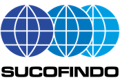
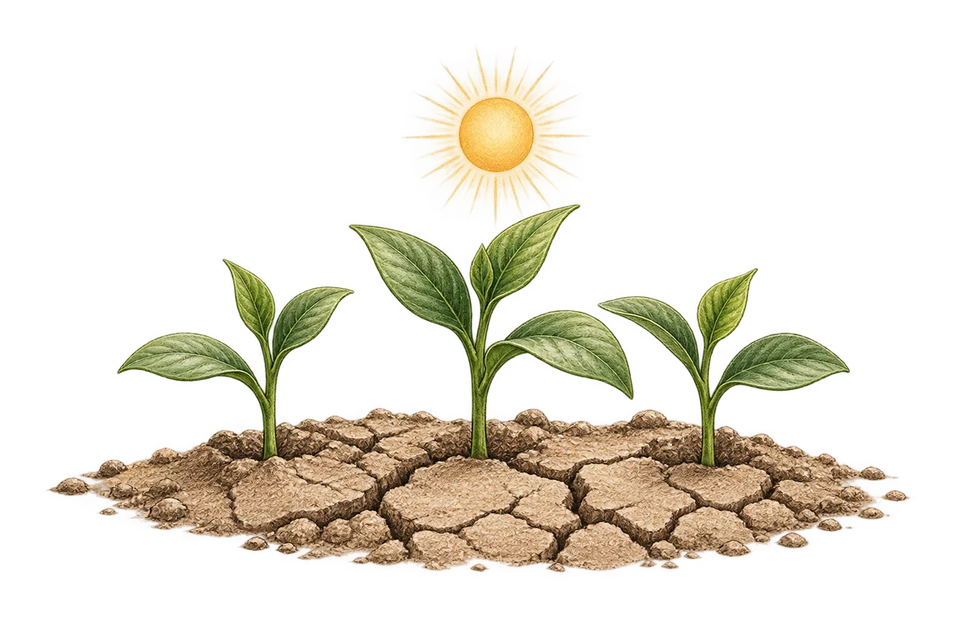
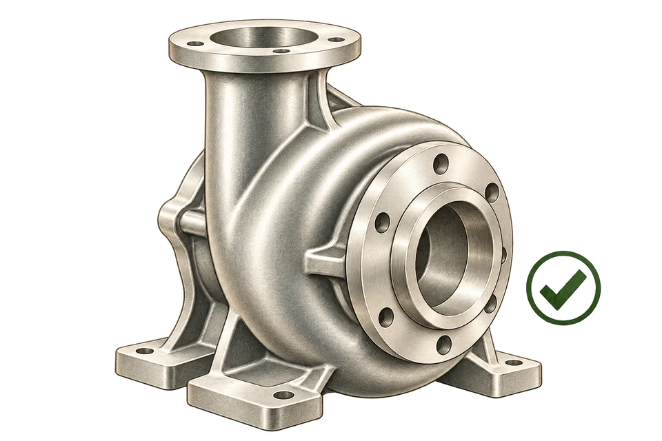
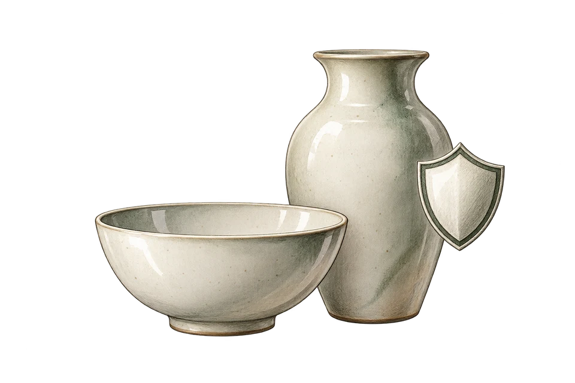
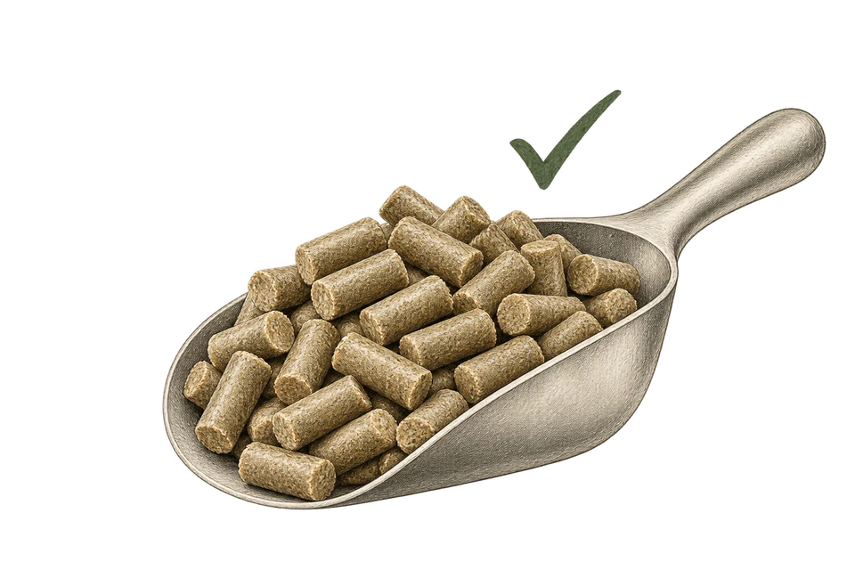
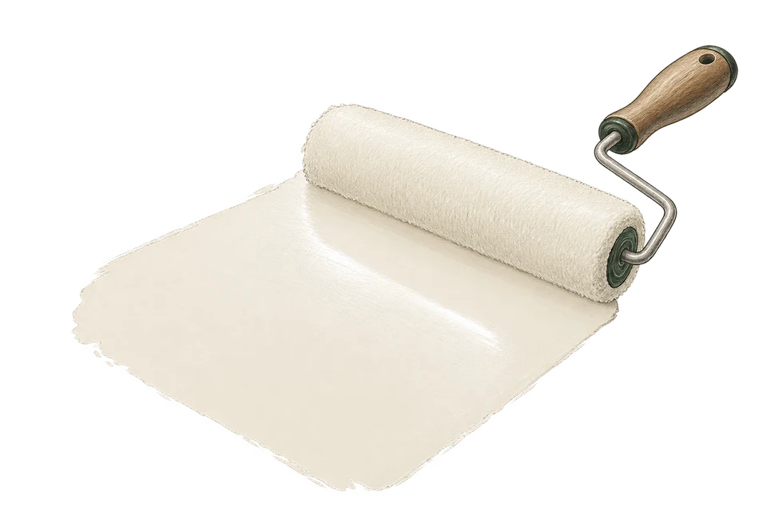

Clay Powder Supplier from Indonesia
Natural clay with high binding strength, supplied as white, red and brown clay. Used as a binder for animal feed pellets and granular fertilizers and in drilling mud, lab-tested by Sucofindo.
- Powder60–325 mesh
- TypesWhite, red and brown clay

Clay supplier in East Java, Indonesia
Our clay is a natural aluminosilicate mineral with high binding strength, available as white, red and brown clay. Feed mills use it as a pellet binder, fertilizer producers use it to bind granular fertilizers, and the oil, gas and geotechnical sectors use it as a drilling mud additive.
Its natural plasticity also makes it a raw material for ceramics, bricks and roof tiles, a bonding clay for foundry sand, and a filler for paint, paper and rubber. In sandy soils it helps hold water and nutrients longer.
clay powder · binder clay · pellet binder · fertilizer granulation binder · drilling clay
Specifications
| Forms & sizes | |
|---|---|
| Powder | 60–325 mesh |
| Types | White, red and brown clay |
| Custom sizes | Outside 60–325 mesh on request |
| Typical analysis (Sucofindo report M07767/EOBOAT) | |
| SiO₂ | 51.00% |
| Al₂O₃ | 20.72% |
| Fe₂O₃ | 5.59% |
| Moisture | 5.98% |
| Trade details | |
| Packaging | 25 kg bag · 50 kg bag · Jumbo bag |
| Origin | East Java, Indonesia |
| HS code (indicative) | 2508.40Other clays (not bentonite or kaolin) |
| Incoterms | Open to discussion |
| MOQ & capacity | Ask via WhatsApp or email |
HS codes are indicative 6-digit codes; final classification is confirmed for each shipment with the destination's customs requirements.
COA (Certificate of Analysis)
Clay Powder · Report No. M07767/EOBOAT · Sep 11, 2026
- SiO₂
- 51.00%
- Al₂O₃
- 20.72%
- Fe₂O₃
- 5.59%
- Moisture
- 5.98%

Results apply to the clay powder sample tested by the Sucofindo laboratory (ID Survey group). Every batch/shipment is accompanied by its own COA.
Why buyers choose our Clay
High Plasticity
Easily shaped into ceramics, bricks, and roof tiles before firing.
Strong & Heat-Resistant When Fired
Produces hard, dense, weather-resistant products.
Foundry Sand Binder
Bonding clay keeps metal-casting molds precise and firm.
Drilling Mud Additive
Controls mud viscosity and supports the borehole wall.
Filler for Paint, Paper & Rubber
Adds opacity and surface smoothness while lowering material cost.
High Binding & Water Retention
Helps sandy soil hold water and nutrients longer.
How Clay works in each sector
What the product does, and the result buyers get, sector by sector.
-

Agriculture & PlantationsImproves water and nutrient retention in sandy soil
Fertilizer stays put and plants stay fresh in dry spells
-
Construction & Infrastructure
Raw material for bricks, roof tiles, and Al₂O₃/SiO₂ for cement clinker
Strong, weather-resistant building materials
-

Steel & MetallurgyBonding clay binds foundry molding sand
Precise molds, smooth casting surfaces, fewer defects
-

Glass & CeramicsGives plasticity to the ceramic body
Easy to shape and strong after firing
-

Animal Feed & ChemicalsFeed pellet binder
Pellets hold together, less feed waste
-

Paint, Plastics & RubberPigment extender in paint, coatings, and paper
Better opacity & hiding power, smoother surfaces
Clay: buyer questions
Can't find your answer? Our team replies within 1×24 business hours.
What is your clay used for?
Which clay types do you supply?
What is the composition of your clay?
How is it packed and shipped?
What is the minimum order quantity?
Other natural minerals we supply


Need Clay for your next shipment?
Tell us the grade, packaging, quantity and destination. We reply within 1×24 business hours.